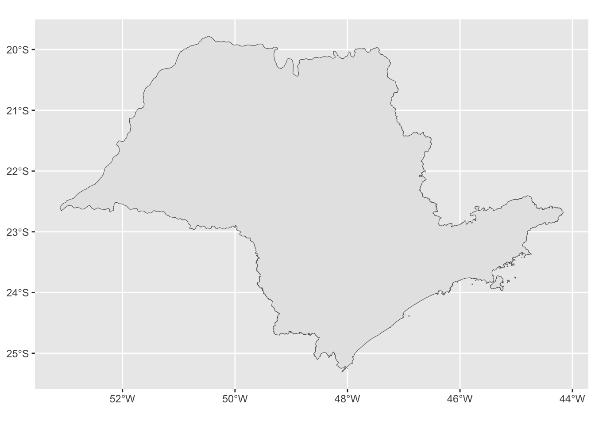

1 + 1[1] 2Diferença entre console e script.
Para executar o código:
Clique na linha e aperte Ctrl + Enter
Selecione um trecho de código e aperte Ctrl + Enter
1 + 1[1] 2# comentário
1 + 1 [1] 2#).O R permite realizar muitas operações matemáticas!
A ordem matemática das operações também vale no R.
2 + 5 # adição[1] 79 - 4 # subtração[1] 55 * 2 # multiplicação[1] 107 / 5 # divisão[1] 1.48 ^ 2 # potenciação[1] 64TempF = TempC * 1.8 + 32:(23*1.8)+32[1] 73.4# rainbow parenthesis
# (((((())))))Ao se desenvolver um script é comum que algumas informações ficam repetidas ao longo do script.
Para reutilizar essas informações ao longo do script utilizamos o que chamamos de objeto.
Um objeto retém e representa um valor, função ou base de dados
Atribuindo valor a um objeto no R: utilizamos o operador: <-. Ex: nome_do_objeto <- valor
Atalho: ALT + -: cria o <- sinal de atribuição.
Exemplos:
# <- <- <- <- <- <- <-
# objeto do tipo texto: SEMPRE ENTRE ASPAS!
meu_nome <- "Beatriz Milz"
meu_nome[1] "Beatriz Milz"# Objeto do tipo numérico
minha_idade <- 31
minha_idade[1] 312024-minha_idade[1] 1993# objeto do tipo numérico (podemos usar casas decimais)
minha_altura <- 1.75
minha_altura[1] 1.75# objeto do tipo lógico (verdadeiro/falso) (TRUE ou FALSE)
estuda <- FALSE
estuda[1] FALSE# Verdadeiro -> 1
# Falso -> 0nome (texto), idade (numérico), estuda (verdadeiro ou falso).Os nomes devem começar com uma letra. Podem conter letras, números, underline (_) e ponto (.).
Não usar acentuação e espaços nos nomes de objetos, arquivos, pastas, etc (muito importante!)
Recomendação: usar_snake_case, ou seja, palavras escritas em minúsculo separadas pelo underscore (_).
O R é case sensitive, isto é, faz a diferenciação entre as letras minúsculas e maiúsculas. Portanto, um objeto chamado teste é diferente de uma outro objeto chamada Teste.
# 123asdas
# abc_123
# abc.123
# snake case
# Beatriz Milz
# beatriz_milz
# iriscor_favorita <- "rosa"
idade <- 30
altura <- "1.75"
peso <- 83
gosta_brocolis <- TRUE
gosta_carne <- "FALSE"class(altura) # character - texto[1] "character"class(gosta_brocolis) # logical - lógico[1] "logical"class(idade) # numeric - double/dbl[1] "numeric"Funções permitem automatizar tarefas comuns de forma mais poderosa do que copiar e colar.
O R possui muitas funções já implementadas.
Pacotes são coleções de funções, dados e documentação que ampliam as capacidades do R básico. Veremos como instalá-los logo!
Você pode desenvolver suas próprias funções!
Estrutura: nome_da_funcao(argumentos = ...)
Sys.Date() # não precisa de argumento para funcionar[1] "2024-08-24"data_hoje <- Sys.Date()
class(data_hoje) # classe/tipo: data[1] "Date"class() e descubra qual é o tipo dos objetos apresentados no exercício anterior, e confira se a classe que você imaginou está correta.# façam amanhã.c(). Exemplo:conjunto <- c(1, 2, 3)
conjunto[1] 1 2 3:. Exemplo:conjunto_2 <- 1:10
conjunto_2 [1] 1 2 3 4 5 6 7 8 9 10c("1", 2, 3) # tudo vira texto T_T[1] "1" "2" "3"c(1, 2, TRUE) [1] 1 2 1# LOGICO -> NUMÉRICO -> TEXTO# Combinar elementos - Função c()
ano_nascimento_irmaos <- c(1993, 1998, 2001, 2012, 2012)
# subtração com cada elemento do vetor:
idade_irmaos <- 2024 - ano_nascimento_irmaos
# ver o resultado
idade_irmaos[1] 31 26 23 12 12primeiro_semestre <- c("Janeiro", "Fevereiro", "Março",
"Abril", "Maio", "Junho")
letters [1] "a" "b" "c" "d" "e" "f" "g" "h" "i" "j" "k" "l" "m" "n" "o" "p" "q" "r" "s"
[20] "t" "u" "v" "w" "x" "y" "z"LETTERS [1] "A" "B" "C" "D" "E" "F" "G" "H" "I" "J" "K" "L" "M" "N" "O" "P" "Q" "R" "S"
[20] "T" "U" "V" "W" "X" "Y" "Z"length() retorna o comprimento do vetor, para descobrir quantos elementos ele tem:length(primeiro_semestre)[1] 6length(letters)[1] 26[]# primeiro elemento do vetor
primeiro_semestre[1] # em outras linguagens, começa no 0 [1] "Janeiro"# primeiro elemento até o segundo
primeiro_semestre[1:2] [1] "Janeiro" "Fevereiro"# remove o elemento 1
primeiro_semestre[-1] [1] "Fevereiro" "Março" "Abril" "Maio" "Junho" # seleciona o elemento seis até o quatro
# (e muda a ordem dos elementos)
primeiro_semestre[6:4][1] "Junho" "Maio" "Abril"# Criando um vetor!
primeiro_semestre[c(1,3,5)][1] "Janeiro" "Março" "Maio" # Coluna de uma tabela pode ser acessada com $
iris$Sepal.Length [1] 5.1 4.9 4.7 4.6 5.0 5.4 4.6 5.0 4.4 4.9 5.4 4.8 4.8 4.3 5.8 5.7 5.4 5.1
[19] 5.7 5.1 5.4 5.1 4.6 5.1 4.8 5.0 5.0 5.2 5.2 4.7 4.8 5.4 5.2 5.5 4.9 5.0
[37] 5.5 4.9 4.4 5.1 5.0 4.5 4.4 5.0 5.1 4.8 5.1 4.6 5.3 5.0 7.0 6.4 6.9 5.5
[55] 6.5 5.7 6.3 4.9 6.6 5.2 5.0 5.9 6.0 6.1 5.6 6.7 5.6 5.8 6.2 5.6 5.9 6.1
[73] 6.3 6.1 6.4 6.6 6.8 6.7 6.0 5.7 5.5 5.5 5.8 6.0 5.4 6.0 6.7 6.3 5.6 5.5
[91] 5.5 6.1 5.8 5.0 5.6 5.7 5.7 6.2 5.1 5.7 6.3 5.8 7.1 6.3 6.5 7.6 4.9 7.3
[109] 6.7 7.2 6.5 6.4 6.8 5.7 5.8 6.4 6.5 7.7 7.7 6.0 6.9 5.6 7.7 6.3 6.7 7.2
[127] 6.2 6.1 6.4 7.2 7.4 7.9 6.4 6.3 6.1 7.7 6.3 6.4 6.0 6.9 6.7 6.9 5.8 6.8
[145] 6.7 6.7 6.3 6.5 6.2 5.9class(iris$Species) # "factor"[1] "factor"# dados categóricos
# Podemos combinar as formas de acessar os valores
iris$Species[50][1] setosa
Levels: setosa versicolor virginicairis$Species[51][1] versicolor
Levels: setosa versicolor virginicaUma característica importante do R que pode dificultar a comparação são os valores ausentes ou NA (não disponíveis).
NA representa um valor desconhecido.
Operações envolvendo um valor desconhecido também será desconhecido.
Exemplo:
vetor_com_na <- c(NA, 1, 5, 2, 5, NA)
sum(vetor_com_na) # somar os valores do vetor[1] NA# argumento na.rm = TRUE
sum(vetor_com_na, na.rm = TRUE)[1] 13mean(vetor_com_na, na.rm = TRUE)[1] 3.25median(vetor_com_na, na.rm = TRUE)[1] 3.5sd(vetor_com_na, na.rm = TRUE)[1] 2.061553var(vetor_com_na, na.rm = TRUE)[1] 4.25min(vetor_com_na, na.rm = TRUE)[1] 1max(vetor_com_na, na.rm = TRUE)[1] 5Lembrete: olhar a documentação, na aba help, ou rodando ?funcao ou ??funcao.
is.na() é a função que testa se um objeto é NA.is.na(vetor_com_na)[1] TRUE FALSE FALSE FALSE FALSE TRUEvetor_com_na == 1[1] NA TRUE FALSE FALSE FALSE NAvetor_com_na == NA # isso não funciona do jeito que imaginamos[1] NA NA NA NA NA NAvalores_alturas:numeric:mean() calcula a média.min() e max() para encontrar esse valores.median() para calcular.var() e sd().help(nome_da_funcao) ou ?nome_da_funcao.help(sum)
?sum
??starwarsSe a dúvida permanecer, procure no Google ou pergunte no Discourse.
E se ainda tiver dúvidas, pergunte para a comunidade (há grupos no Telegram e outras redes sociais).
Pacotes são coleções de funções, dados e documentação que estendem as capacidades do R básico.
Eles precisam ser instalados e carregados.
Você só precisa instalar o pacote uma vez, mas precisa carregá-lo sempre que começar uma nova sessão.
Instalação de Pacotes: install.packages("nome-do-pacote"). Para instalar o pacote use as aspas.
install.packages("tidyverse")
install.packages("janitor")library(nome-do-pacote). Para carregar o pacote, não é necessário utilizar aspas.library(tidyverse)dplyr::filter(): pacote::funcao().# Instalar pacotes do GitHub
install.packages("remotes")
library(remotes)
install_github("cienciadedatos/dados")library(dados)
pinguins# A tibble: 344 × 8
especie ilha comprimento_bico profundidade_bico comprimento_nadadeira
<fct> <fct> <dbl> <dbl> <int>
1 Pinguim-de-ad… Torg… 39.1 18.7 181
2 Pinguim-de-ad… Torg… 39.5 17.4 186
3 Pinguim-de-ad… Torg… 40.3 18 195
4 Pinguim-de-ad… Torg… NA NA NA
5 Pinguim-de-ad… Torg… 36.7 19.3 193
6 Pinguim-de-ad… Torg… 39.3 20.6 190
7 Pinguim-de-ad… Torg… 38.9 17.8 181
8 Pinguim-de-ad… Torg… 39.2 19.6 195
9 Pinguim-de-ad… Torg… 34.1 18.1 193
10 Pinguim-de-ad… Torg… 42 20.2 190
# ℹ 334 more rows
# ℹ 3 more variables: massa_corporal <int>, sexo <fct>, ano <int>glimpse(starwars)Rows: 87
Columns: 14
$ name <chr> "Luke Skywalker", "C-3PO", "R2-D2", "Darth Vader", "Leia Or…
$ height <int> 172, 167, 96, 202, 150, 178, 165, 97, 183, 182, 188, 180, 2…
$ mass <dbl> 77.0, 75.0, 32.0, 136.0, 49.0, 120.0, 75.0, 32.0, 84.0, 77.…
$ hair_color <chr> "blond", NA, NA, "none", "brown", "brown, grey", "brown", N…
$ skin_color <chr> "fair", "gold", "white, blue", "white", "light", "light", "…
$ eye_color <chr> "blue", "yellow", "red", "yellow", "brown", "blue", "blue",…
$ birth_year <dbl> 19.0, 112.0, 33.0, 41.9, 19.0, 52.0, 47.0, NA, 24.0, 57.0, …
$ sex <chr> "male", "none", "none", "male", "female", "male", "female",…
$ gender <chr> "masculine", "masculine", "masculine", "masculine", "femini…
$ homeworld <chr> "Tatooine", "Tatooine", "Naboo", "Tatooine", "Alderaan", "T…
$ species <chr> "Human", "Droid", "Droid", "Human", "Human", "Human", "Huma…
$ films <list> <"A New Hope", "The Empire Strikes Back", "Return of the J…
$ vehicles <list> <"Snowspeeder", "Imperial Speeder Bike">, <>, <>, <>, "Imp…
$ starships <list> <"X-wing", "Imperial shuttle">, <>, <>, "TIE Advanced x1",…tabela <- geobr::list_geobr()Loading required namespace: sfsp <- geobr::read_state("SP")Using year 2010
Downloading: 2 kB
Downloading: 2 kB
Downloading: 26 kB
Downloading: 26 kB
Downloading: 77 kB
Downloading: 77 kB
Downloading: 77 kB
Downloading: 77 kB library(ggplot2)
sp |>
ggplot() +
geom_sf()